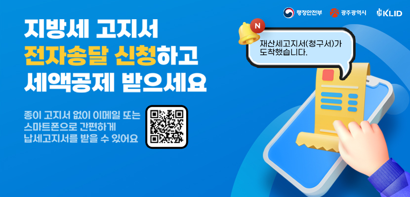
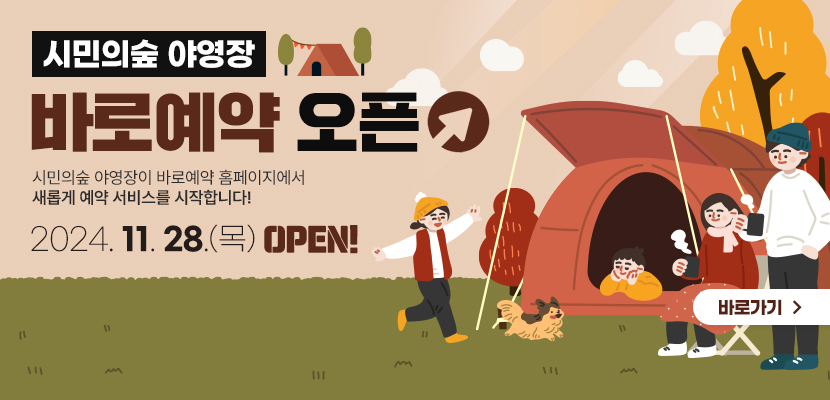
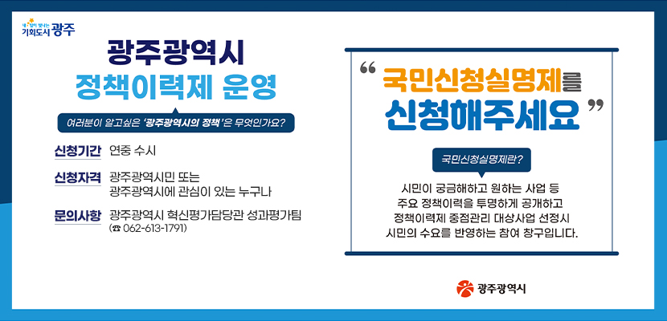

본문 바로가기
이 누리집은 대한민국 공식 전자정부 누리집입니다.
빛고을콜센터
광주광역시의회
패밀리사이트
광주코로나현황
열린시장실
문화관광
어린이시청
모두의 광주
광주복지플랫폼
로그인
회원가입
Language
ENGLISH
中國語
日本語
인스타그램
페이스북
유튜브
카카오스토리
블로그
카카오톡채널
소통ㆍ참여
참여광장
시민의 소리
칭찬합니다(광주온)
구인구직참여
적극행정
주민자치
온라인여론조사
고향사랑기부제
시민제안정책포럼
광주온(ON)
온라인예약신청
바로예약
공용차량신청
민간단체정보
공지사항
비영리법인등록현황
비영리민간단체등록및지원
시민사회단체편람
어린이시청
시정소식
공지사항
보도자료
언론보도_사실은 이렇습니다
고시·공고/입법예고
시험인사정보
입찰소식
기타소식
실국소식
직속기관/사업소소식
광주광역시민대상
열린민원
민원안내
여권안내
민원신청
민원처리공개
채무힐링행복상담센터
110수화(화상)/채팅상담
행정서비스헌장
정보공개
행정정보공개
예산·재정정보
사전정보공표목록
즐겨찾는사전정보
원문정보공개
정책이력제
공공데이터개방
복합쇼핑몰사업계획서 사업자제출
전방·일신방직 부지 국제지명 설계공모 결과
광천터미널 복합화사업계획서 사업자 제출
빅데이터 통합플랫폼
스마트도시분석포털
감사결과공개
계약365코너
업무추진비
업무제휴 · 협약
조직정보
광주소개
일반현황
시정구호
시청안내
시의상징
홍보영상
광주통계
광주의역사
ebook
분야별정보
교통
도시·건설
산업·경제
복지·건강
재난·안전
재정·세정
행정·감사·기타
환경
농업·도시농업
5·18
인권
문화·체육·관광
여성·가족·교육·청년
군공항이전사업
사이트맵
6.6℃
흐림
61㎍/㎥
보통
통합검색
열린게양대
모두의광주
광주온(ON)
바로응답
바로예약
행정조직도



슬라이드 재생
슬라이드 정지
이전 슬라이드
다음 슬라이드